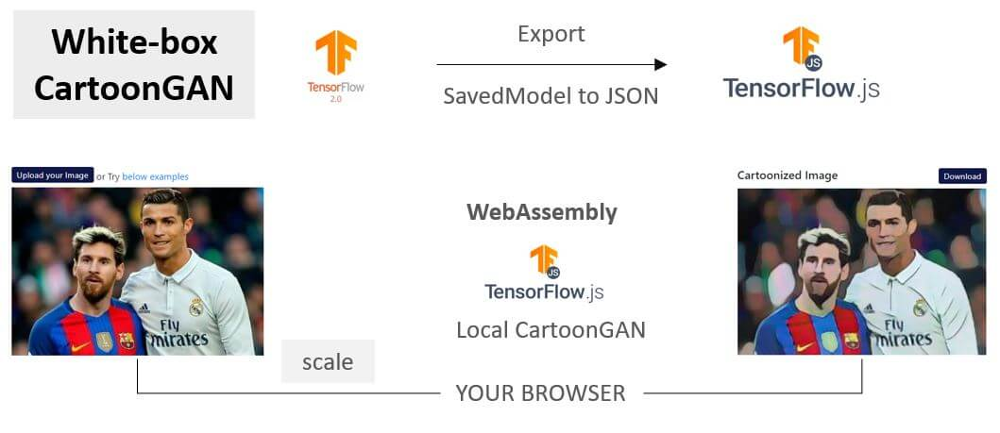

All of your data stays within your browser.
Upload an image or try below examples
We used Generative Adversarial Network (GAN) model proposed in Learning to Cartoonize Using White-box Cartoon Representations (CVPR 2020) by Xinrui Wang and Jinze Yu. Our idea was to test if it is reasonably possible to perform model inferences in the browser clients with CPUs only. Without needing to send any of user's data (images) to servers.
Here's the application flow and architecture:
TensorFlow Saved models are converted to TensorFlow.js models. Images are padded and scaled to 256px before they are fed to the model. This rescaling is done to speed up the processing and might reduce the quality too.
Model footprint is ~1.5MB. These models in the browsers without GPU acceleration could manage to cartoonize, but takes anywhere between 5-10 seconds for processing. This is much slower than tflite models performance in mobile devices. However, web browsers benefit from users not needing to install anything or transmitting data outside of their systems.